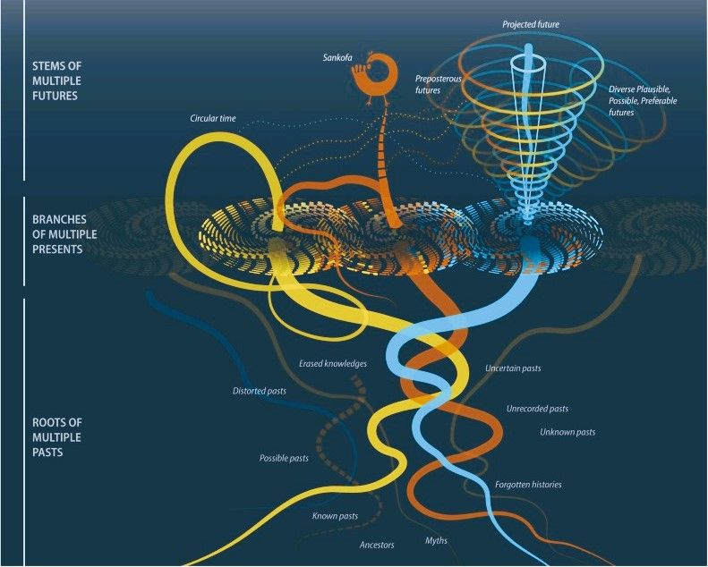
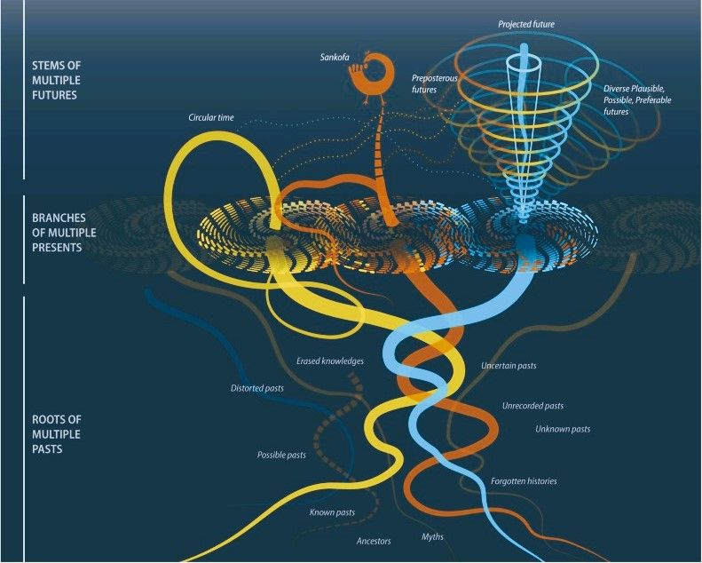

Abstract
The futures cone is a heuristic framework that describes what future possibilities people believe to be probable, plausible, and desirable from the perspective of the present moment. When used to guide collective storytelling about the future (e.g. in a futures workshop), the model is useful for helping people articulate their assumptions about what is most (un)likely. However, it has been criticized for favoring dominant projections regarding what "probable" means.
This paper will extend the futures cone into high-dimensional spaces: by framing futures as existing within high-dimensional spaces, the work highlights how different worldviews can generate overlapping yet distinct projections of potential outcomes. Concepts such as the "curse of dimensionality" are reinterpreted to explain the tendency of foresight and futures storytelling to privilege certain "desirable" narratives while neglecting the full breadth of possibility. The paper proposes that adopting a multidimensional lens can improve reflexivity in futures thinking and open new pathways for inclusive scenario construction.
 
